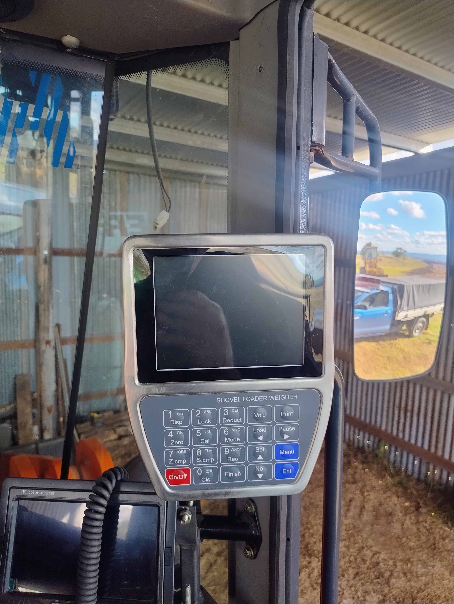

Loader Scales Mounted in Cab
System installed in a Herculese loader.
The System is installed directly in the cab of the loader.All the electronics is in the Stainless head unit. A weld is required on the support near lifting arms for proximity sensors.
We request the kit payment upfront before dispatching the system.As building and configuring the kit is done prior to shipment, this ensures that the system is ready for installation upon arrival.
OUR specialist delivery Company we control delivers the kit to site. A site fee and delivery cost of $550.00 will cover all installation and calibration services.
we contact a Hydraulics specialist to assist with the connections required for Transducers so the system reatins a local warranty for Hydraulic issues.This is inculded in price
